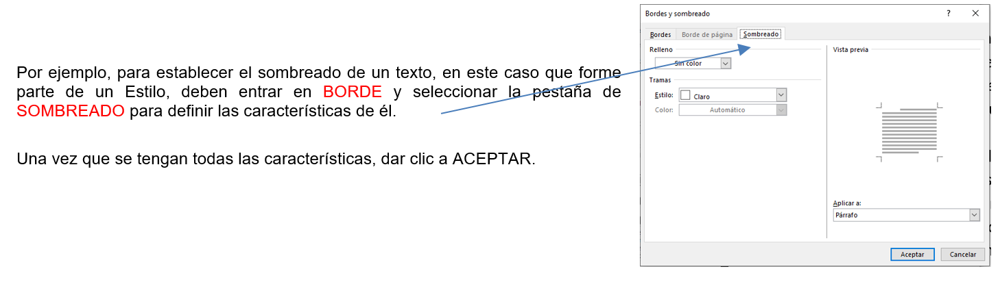
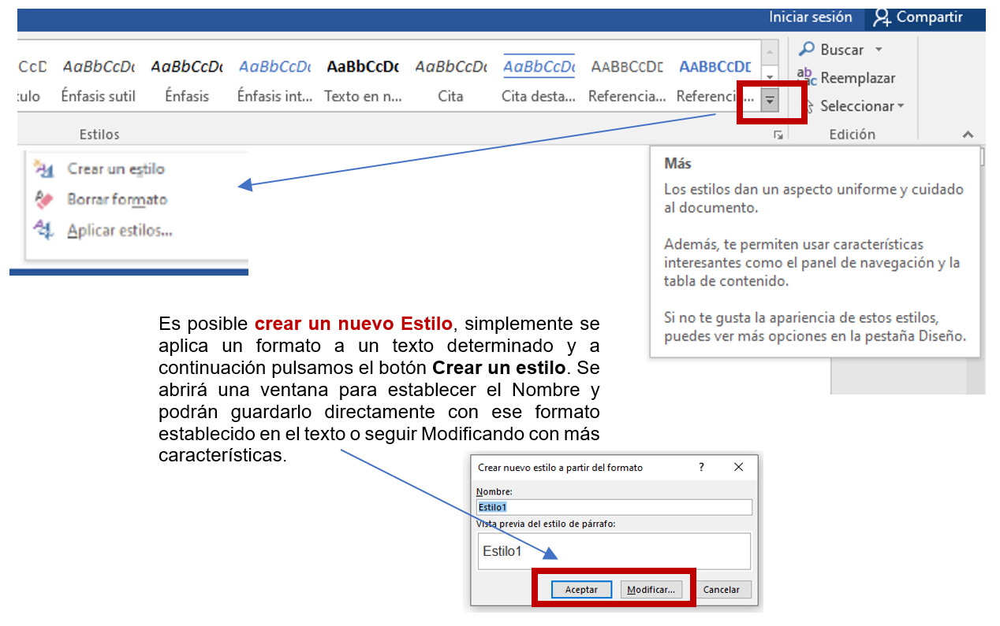

En la actividad anterior se analizaron algunos grupos de la Pestaña Inicio. En esta ocasión, nos enfocaremos a otro grupo, el de ESTILOS.
GRUPO ESTILOS
Los estilos facilitan la aplicación de formatos en el texto (color, tipo y tamaño de fuente, etc.) y ayudan a definir la estructura del documento.
Algunos de los estilos están identificados casi con el mismo nombre, varía solamente un número que los acompaña, estos números identifican solamente jerarquía. Por ejemplo, Título 1, Título 2, Título 3.
Se puede escoger uno de los estilos entre los formatos predeterminados, o crear uno personalizado, pero se recomienda dejar los Estilos denominados como Título1, Título2 y Título3 para aquellos elementos que formarán parte de la TABLA DE CONTENIDO. Si la información a la que aplicarán el estilo NO debe estar en la TABLA DE CONTENIDO, se recomienda utilizar o definir otro estilo nuevo a tu lista para este texto. Cualquier estilo se puede modificar, en caso de que contenga elementos que no sean de nuestro interés. Para ver todos los estilos disponibles, utilicen los botones arriba y abajo del lateral derecho, así como el desplegable ubicado en la parte inferior derecha del grupo.
Cuando se crea un documento, por defecto se aplica el estilo Normal, pero basta con hacer clic sobre cualquier otro estilo para que empiece a aplicarlo al texto que introduzcamos a continuación. Además, es posible aplicar un estilo determinado a un texto ya escrito, seleccionándolo y pulsando posteriormente sobre el estilo que se desee.
Hay estilos disponibles para cada elemento del documento: Título, Subtítulo, Cita, Énfasis, Referencia, etc. Por lo cual, se escogen por ser la etiqueta más adecuada para el tipo de texto, más que seleccionarlo por motivos estéticos.
.
.
MODIFICAR Y/O CREAR UN ESTILO
Si quieren modificar un estilo de los que se encuentran en la cinta, le dan un clic con el botón secundario sobre él, y les aparece un menú contextual con varias opciones, y seleccionen Modificar.

Un Estilo definido puede aplicarse tantas veces lo requieran, solamente tendrán que señalar el texto y dar un clic al icono del Estilo. Si previo a la modificación se había establecido dicho Estilo en el documento, automáticamente se adaptan los textos a esas características. No es necesario volver a aplicarlos, cada vez que se modifique un estilo, se modifica en el texto directamente que le fue asignado, sin necesidad de volver a marcarlos sobre él.
